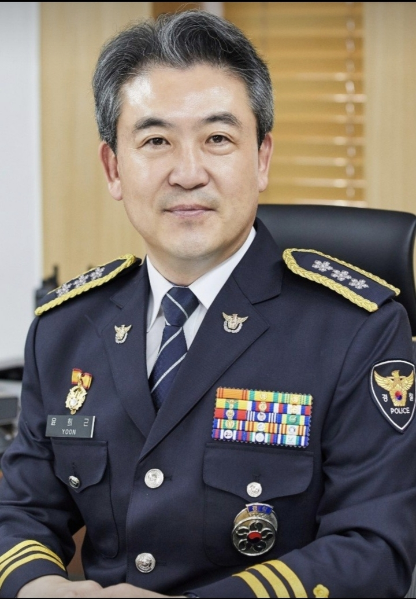
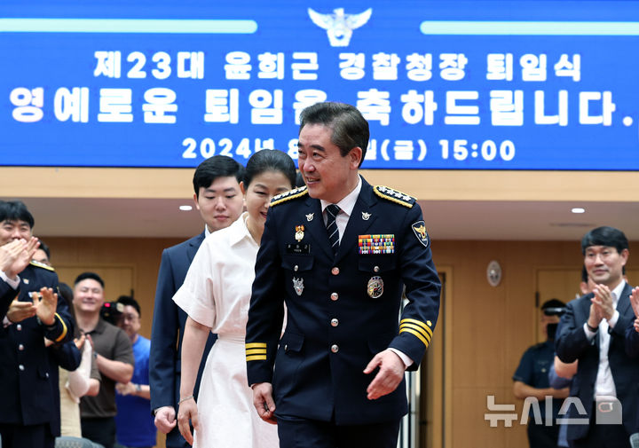
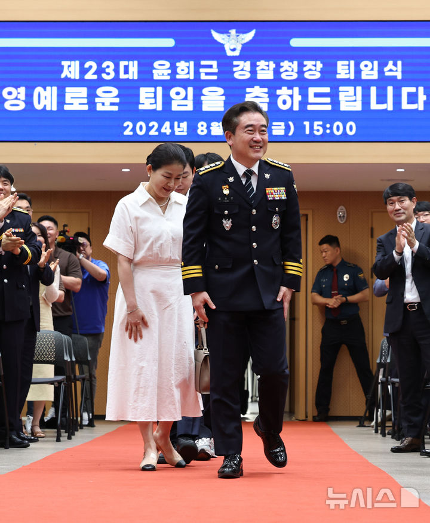
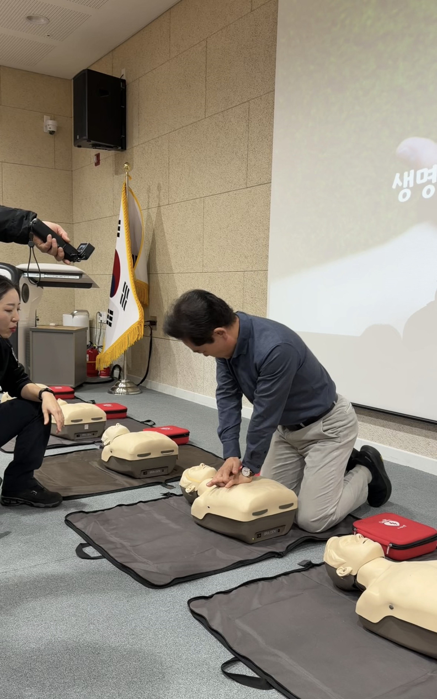
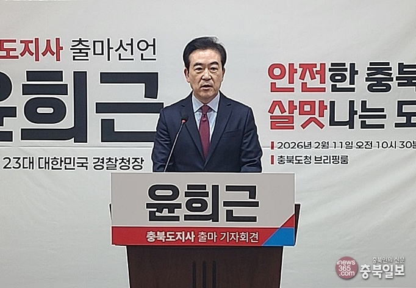

제23대 경찰청장
청주 출신
충청북도지사 후보
스스로 주도하는 충북
충북의 다음 10년을 새롭게 그리겠습니다
충청북도지사 후보
스스로 주도하는 충북
충북의 다음 10년을 새롭게 그리겠습니다
"충북의 작은 농촌 마을에서 태어나
대한민국 경찰의 수장까지 올랐습니다.
이제 그 경험과 역량을 고향에 바치겠습니다."

국민의힘 충청북도지사 후보
치안정감 승진
2022.8 ~ 2024.8 (치안총감)
경찰행정학과
현재청년이 떠나지 않는 충북, 돌아오는 충북
예방 중심 안전 행정으로 전환
반도체·바이오·AI 중심 산업 구조 혁신
충북 전역이 골고루 성장하는 균형 도정
대형 투자와 지역 소상공인이 함께 성장



